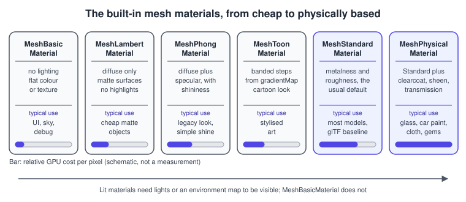
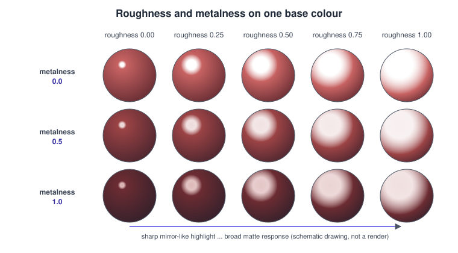
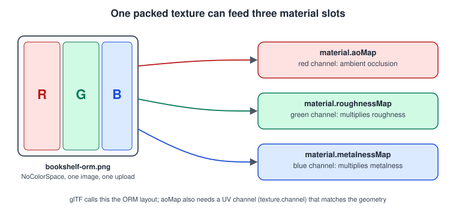
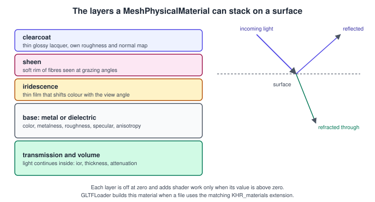
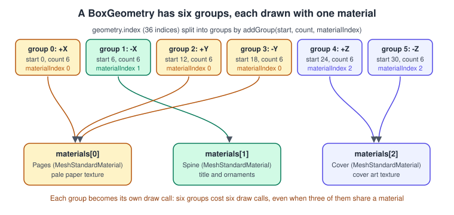
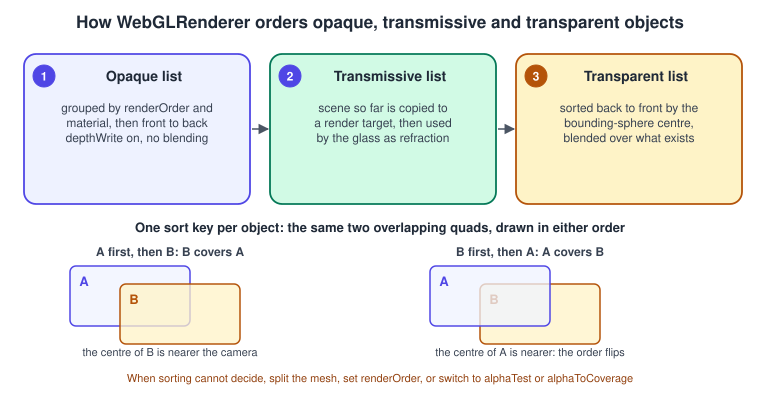

three.js Materials and PBR
|
This content was generated with the assistance of AI and should be verified against the official documentation before being relied on in production. |
A material tells the renderer what a surface is made of: which colour it has, how shiny it is, whether it glows, whether light
passes through it. In three.js a Mesh is a geometry plus a material, and almost every visual decision that is not about shape
lives in the material. This page covers the built-in mesh materials, the physically based (PBR) ones in depth, how maps and
channels feed them, how one mesh can use several materials, and how transparency works. The textures that go into the maps, and
the colour management that decides how their values are read, are on the next page,
three.js Textures and Colour Management; the lights that
make PBR materials visible are on three.js Lights and Shadows.
The general concepts behind this page are in Lighting & Shading Models.
The facts were checked in November 2026 against three.js r187 (three@0.187.0, the current npm release at that date) and its API
documentation. The examples are ES modules built with Vite, as in
three.js: Getting Started, and use WebGLRenderer, which runs on WebGL 2
in every evergreen browser (three.js dropped WebGL 1 support in r163). The classes described here also exist in the node-material
form used by WebGPURenderer, which is introduced in
three.js: WebGPURenderer and TSL; the property names are the same.
In the Bookshelf running example this page is the "PBR materials" step of the three.js track: the GLB shelf and books loaded from bookshelf.glb get their wood, cover, spine and page materials checked, tuned and lit by an environment. The next steps (controls, picking, the falling-books game) reuse these materials unchanged.
What a material does
Rendering a mesh needs a shader program and a set of values for that program. A three.js material is the high-level description
that WebGLRenderer turns into both: choosing MeshStandardMaterial selects the standard PBR shader, and setting roughness,
map or normalMap fills in uniforms and switches on #define branches in the generated GLSL. Two consequences matter in
practice:
-
Changing a number is cheap, changing the shape of the shader is not. Setting
material.roughness = 0.4updates a uniform. Assigning amapwhere there was none, turningtransparenton or enablingflatShadingchanges the program, so the renderer needs to compile a new variant and the material must be flagged withmaterial.needsUpdate = true. -
Materials are shared by reference. Hundreds of meshes can point at one material object, which costs one program and one set of uniforms. Cloning a material per mesh is only needed when each mesh must change a value independently.
The built-in mesh materials

| Material | Lighting model | Typical use |
|---|---|---|
|
None. Output is |
HUD planes, skyboxes, helpers, video screens, debugging UVs. |
|
Diffuse only (no specular highlight). |
Matte surfaces where the highlight is not wanted; cheap scenes. |
|
Diffuse plus Blinn-Phong specular controlled by |
The look most older tutorials and the three books produce; still available for stylised work. |
|
Diffuse quantised into bands by an optional |
Cartoon or cel looks. |
|
Physically based metallic-roughness model with image-based lighting from |
The default choice for models; the glTF base material. |
|
Standard plus clearcoat, sheen, transmission, iridescence, anisotropy, dispersion, volume and specular controls. |
Glass, car paint, cloth, gems, anything that needs a second layer. |
|
No lights: the normal looks up a colour in a "matcap" image. |
Sculpt viewers and fast stylised previews. |
|
Output the normal, depth or distance as colour. |
Debugging, depth passes and the internals of shadows. |
|
Special purpose: shadow catcher, points, lines, billboards. |
Used with |
|
Your own GLSL. |
See three.js Custom Shaders in GLSL; |
The decision most projects face is shown below. When in doubt, use MeshStandardMaterial: it is what glTF files describe, it
reacts correctly to every light type, and the extra cost over Phong is small on any GPU from the last decade.
Metalness and roughness
MeshStandardMaterial implements the metallic-roughness workflow also used by glTF 2.0 and by most game engines. The surface
is described by three base quantities:
-
color(and themapthat multiplies it) is the base colour: the diffuse colour of a non-metal, or the tint of the reflection of a metal. -
metalnessfrom 0.0 to 1.0 says how much the surface behaves as a conductor. Real surfaces are almost always 0 or 1; values in between represent a mix, such as a rusty or dusty metal, and are mostly used where a texture blends the two. -
roughnessfrom 0.0 to 1.0 says how blurred the specular reflection is. Internally the microfacet width is the square of the roughness, so the visual change is roughly even across the range. The default is 1.0, which is why a plainMeshStandardMateriallooks matte and a little dull until you lower it.
Non-metals reflect light with a colourless highlight of about 4 percent at normal incidence (an index of refraction of 1.5) and
show the base colour as diffuse light. Metals have no diffuse light: their reflection takes the base colour, and the specular
response is the whole look. That is why a metal with no environment to reflect looks black: it needs scene.environment or an
envMap (see the next page) or lights with a specular response.

The figure is a schematic drawing in the style of the sphere grid on the three.js material documentation pages. Building the real one takes a dozen lines and is a good first test of any new environment map:
import * as THREE from 'three';
import { RoomEnvironment } from 'three/addons/environments/RoomEnvironment.js';
const renderer = new THREE.WebGLRenderer({ antialias: true });
renderer.setSize(innerWidth, innerHeight);
renderer.setPixelRatio(Math.min(devicePixelRatio, 2));
document.body.appendChild(renderer.domElement);
const scene = new THREE.Scene();
const pmrem = new THREE.PMREMGenerator(renderer);
scene.environment = pmrem.fromScene(new RoomEnvironment(), 0.04).texture;
const camera = new THREE.PerspectiveCamera(35, innerWidth / innerHeight, 0.1, 100);
camera.position.set(0, 0, 14);
const geometry = new THREE.SphereGeometry(0.8, 48, 32);
const roughnessSteps = [0, 0.25, 0.5, 0.75, 1];
const metalnessSteps = [0, 0.5, 1];
metalnessSteps.forEach((metalness, row) => {
roughnessSteps.forEach((roughness, col) => {
const material = new THREE.MeshStandardMaterial({
color: 0x9b2c2c, // the cover red; the colour constructor argument is read as sRGB
metalness,
roughness,
});
const sphere = new THREE.Mesh(geometry, material);
sphere.position.set((col - 2) * 2, (1 - row) * 2, 0);
scene.add(sphere);
});
});
renderer.setAnimationLoop(() => renderer.render(scene, camera));
addEventListener('resize', () => {
camera.aspect = innerWidth / innerHeight;
camera.updateProjectionMatrix();
renderer.setSize(innerWidth, innerHeight);
});RoomEnvironment is a small procedural scene shipped with the examples; PMREMGenerator.fromScene(scene, sigma) renders it into
a prefiltered environment texture. Using it avoids downloading an HDR file while you experiment (the HDR route is on the next page).
Reading the maps: which channel is which
Every slot that holds data rather than colour reads specific channels of the texture. This is the part that most often goes wrong when textures are exported from another tool, so the table lists them all.
| Slot | Channel read | Effect | Colour space of the texture |
|---|---|---|---|
|
RGB (and A with |
Base colour, multiplied by |
|
|
RGB as a tangent-space vector |
Perturbs the shading normal; |
|
|
One channel as height |
Cheaper relief from a greyscale image; ignored when a |
|
|
Green |
Multiplied with |
|
|
Blue |
Multiplied with |
|
|
Red |
Baked ambient occlusion on the indirect light; |
|
|
RGB |
Baked illuminance added to the indirect light; |
|
|
RGB |
Self-illumination, multiplied by |
|
|
Green |
Opacity; only effective with |
|
|
One channel as height |
Moves the vertices ( |
|
|
Cube or equirectangular, prefiltered |
Overrides |
Linear for HDR files, see the next page |
The ambient-occlusion, roughness and metalness maps share a convention that glTF uses: occlusion in red, roughness in green, metalness in blue, often called an ORM texture. One image then feeds three slots, which saves two texture uploads and two samplers per material:

import * as THREE from 'three';
const loader = new THREE.TextureLoader();
const color = loader.load('/textures/book-color.png');
const normal = loader.load('/textures/book-normal.png');
const orm = loader.load('/textures/book-orm.png');
color.colorSpace = THREE.SRGBColorSpace; // base colour is colour data
// normal and orm stay NoColorSpace: they are numbers, not colours
for (const t of [color, normal, orm]) {
t.anisotropy = 8; // sharper at grazing angles; see the next page
}
const cover = new THREE.MeshStandardMaterial({
map: color,
normalMap: normal,
normalScale: new THREE.Vector2(0.8, 0.8),
aoMap: orm,
roughnessMap: orm,
metalnessMap: orm,
roughness: 1, // the maps multiply these, so keep them at 1 to use the full range
metalness: 1,
});When a map is present the scalar multiplies it. A common mistake is to leave metalness: 0 and wonder why a metalnessMap has
no effect: 0 times anything is 0. Set the scalars to 1 and let the textures decide.
The shelf wood, a normal map and the Bookshelf textures
The shared Bookshelf textures (bookshelf-wood.png, bookshelf-cover.png, bookshelf-spine.png and bookshelf-pages.png, all
sRGB colour images, 256 by 256 or 64 by 256 pixels) are already embedded in the GLB, and GLTFLoader assigns their colour space
for you. The example below loads the GLB and then adjusts what a game would adjust: the wood becomes rougher and non-metallic,
the cover gets a slight sheen and a low roughness, and everything is lit by an environment. This is a complete Vite project
step; copy bookshelf.glb into the public folder first.
<!doctype html>
<html lang="en">
<head>
<meta charset="utf-8" />
<meta name="viewport" content="width=device-width, initial-scale=1" />
<title>Bookshelf: PBR</title>
<style>html, body { margin: 0; height: 100%; overflow: hidden; background: #111; }</style>
</head>
<body>
<script type="module" src="/main.js"></script>
</body>
</html>// main.js
import * as THREE from 'three';
import { GLTFLoader } from 'three/addons/loaders/GLTFLoader.js';
import { RoomEnvironment } from 'three/addons/environments/RoomEnvironment.js';
const renderer = new THREE.WebGLRenderer({ antialias: true });
renderer.setPixelRatio(Math.min(devicePixelRatio, 2));
renderer.setSize(innerWidth, innerHeight);
renderer.toneMapping = THREE.ACESFilmicToneMapping;
renderer.toneMappingExposure = 1.0;
document.body.appendChild(renderer.domElement);
const scene = new THREE.Scene();
scene.background = new THREE.Color(0x1f2937);
const pmrem = new THREE.PMREMGenerator(renderer);
const envTexture = pmrem.fromScene(new RoomEnvironment(), 0.04).texture;
scene.environment = envTexture;
scene.environmentIntensity = 0.8;
const camera = new THREE.PerspectiveCamera(40, innerWidth / innerHeight, 0.1, 100);
camera.position.set(0, 1.4, 6);
const key = new THREE.DirectionalLight(0xffffff, 2);
key.position.set(3, 5, 4);
scene.add(key);
const gltf = await new GLTFLoader().loadAsync('/bookshelf.glb');
const shelf = gltf.scene;
scene.add(shelf);
const seen = new Set();
shelf.traverse((object) => {
if (!object.isMesh) return;
const materials = Array.isArray(object.material) ? object.material : [object.material];
for (const material of materials) {
if (seen.has(material)) continue; // materials are shared by many meshes
seen.add(material);
console.log(object.name, material.name, material.type, material.roughness, material.metalness);
if (material.name === 'Wood') {
material.roughness = 0.75;
material.metalness = 0;
}
if (material.name === 'Cover') {
material.roughness = 0.45; // the cover is cloth or leather, not glossy
}
if (material.map) material.map.anisotropy = renderer.capabilities.getMaxAnisotropy();
}
});
renderer.setAnimationLoop((time) => {
shelf.rotation.y = Math.sin(time * 0.0004) * 0.4;
renderer.render(scene, camera);
});
addEventListener('resize', () => {
camera.aspect = innerWidth / innerHeight;
camera.updateProjectionMatrix();
renderer.setSize(innerWidth, innerHeight);
});Source: three.js docs: GLTFLoader
The loop callback receives a timestamp in milliseconds. The console.log line is worth keeping while you learn a model: it
prints the material names that the exporter wrote (Wood, Cover, Spine, Pages for this file), which is how you find the
ones to tweak. The name check is the standard way to reach a material inside a loaded model.
MeshPhysicalMaterial: the second layer and beyond
MeshPhysicalMaterial extends MeshStandardMaterial with parameters for things a single metallic-roughness layer cannot do.
Each one is off by default (its value is zero) and costs shader time only when it is switched on, because the renderer adds the
matching code to the program only when the value is greater than zero.
| Feature | Properties | Look |
|---|---|---|
Clearcoat |
|
A thin glossy lacquer over the base: car paint, varnished wood, a laminated book cover. |
Sheen |
|
A soft, grazing-angle rim for fabric, velvet and dust. |
Transmission and volume |
|
Glass and liquids: light passes through, refracts and is tinted over a distance. |
Specular control |
|
Fine control of the non-metal highlight; |
Iridescence |
|
Thin-film colour shifts: soap bubble, oil slick, beetle shell. |
Anisotropy |
|
Stretched highlights on brushed metal, hair and satin. |
Dispersion |
|
Splits colours in thick transmissive objects such as gemstones (needs transmission and a thick volume). |
Diffuse roughness |
|
Rough diffuse response for very matte materials such as clay or chalk. |
ior ranges from 1.0 to 2.333 and defaults to 1.5; reflectivity is a derived alias (0.5 corresponds to an ior of 1.5), so
setting one changes the other. These parameters correspond to the glTF KHR_materials_* extensions
(clearcoat, sheen, transmission, volume, ior, specular, iridescence, anisotropy, dispersion and others), and
GLTFLoader creates a MeshPhysicalMaterial automatically when a file uses one. That is the usual way to get them: author the
effect in Blender, export it, and let the loader do the mapping.

A small gallery on the Bookshelf scale: a varnished cover, a velvet bookmark, a brass bookend, a glass paperweight and a soap-film bubble. Everything is created in code, so it runs without assets:
import * as THREE from 'three';
import { RoomEnvironment } from 'three/addons/environments/RoomEnvironment.js';
const renderer = new THREE.WebGLRenderer({ antialias: true });
renderer.setSize(innerWidth, innerHeight);
renderer.setPixelRatio(Math.min(devicePixelRatio, 2));
renderer.toneMapping = THREE.ACESFilmicToneMapping;
document.body.appendChild(renderer.domElement);
const scene = new THREE.Scene();
scene.background = new THREE.Color(0x30343b);
scene.environment = new THREE.PMREMGenerator(renderer)
.fromScene(new RoomEnvironment(), 0.04).texture;
const camera = new THREE.PerspectiveCamera(35, innerWidth / innerHeight, 0.1, 50);
camera.position.set(0, 1.2, 9);
const gallery = {
varnishedCover: new THREE.MeshPhysicalMaterial({
color: 0x9b2c2c, roughness: 0.55, clearcoat: 1, clearcoatRoughness: 0.08,
}),
velvet: new THREE.MeshPhysicalMaterial({
color: 0x3b1d6b, roughness: 0.9, sheen: 1, sheenRoughness: 0.4, sheenColor: new THREE.Color(0xd8b4fe),
}),
brass: new THREE.MeshPhysicalMaterial({
color: 0xc9a227, metalness: 1, roughness: 0.28, anisotropy: 0.7,
}),
glass: new THREE.MeshPhysicalMaterial({
color: 0xffffff, metalness: 0, roughness: 0.04, transmission: 1,
thickness: 0.6, ior: 1.5, attenuationColor: new THREE.Color(0x9ae6b4), attenuationDistance: 1.5,
}),
bubble: new THREE.MeshPhysicalMaterial({
color: 0xffffff, roughness: 0.05, iridescence: 1, iridescenceIOR: 1.3,
iridescenceThicknessRange: [100, 400], transmission: 0.9, thickness: 0.05,
}),
};
const geometry = new THREE.SphereGeometry(0.9, 64, 48);
Object.values(gallery).forEach((material, i) => {
const mesh = new THREE.Mesh(geometry, material);
mesh.position.x = (i - 2) * 2.2;
scene.add(mesh);
});
renderer.setAnimationLoop((time) => {
scene.children.forEach((child) => { if (child.isMesh) child.rotation.y = time * 0.0004; });
renderer.render(scene, camera);
});Performance notes for the physical material:
-
Transmission is the expensive one. Objects with
transmission > 0need to see the rest of the scene, so the renderer first draws the opaque objects into an off-screen render target, which it reuses for every transmissive mesh in that frame. Keep the number of transmissive meshes small and the transmission render target resolution reasonable. -
Clearcoat, sheen and iridescence add texture reads and arithmetic per fragment. They are fine for hero objects and costly when applied to every instance of a crowd.
-
The shader program count matters more than the arithmetic. Each distinct combination of features is a separate compiled program; on a slow machine a first frame with many variants can stall for hundreds of milliseconds (see three.js Performance and Disposal for
compileAsync).
Several materials on one mesh
A Mesh accepts either one material or an array of materials. With an array, the geometry must carry groups: ranges of its
index (or of its vertices, for non-indexed geometry) tagged with the array slot to use. BoxGeometry creates six groups, one per
face, with material indices 0 to 5; SphereGeometry has a single group; BufferGeometry.addGroup(start, count, materialIndex)
creates your own.

Every group is a separate draw call. A box with six groups is six draw calls even if three of them use the same material, so for a book the best structure is one group per material: reorder the index ranges so that faces with the same material are adjacent, and replace the six groups with three (or merge geometry, see three.js Geometry). The example below builds a book with three materials and does exactly that, so the book costs three draw calls instead of six:
import * as THREE from 'three';
function makeBook(textures) {
// width (x), height (y), thickness (z): the large faces are +z and -z
const geometry = new THREE.BoxGeometry(0.8, 1.2, 0.25);
const pages = new THREE.MeshStandardMaterial({ name: 'Pages', map: textures.pages, roughness: 0.9 });
const spine = new THREE.MeshStandardMaterial({ name: 'Spine', map: textures.spine, roughness: 0.6 });
const cover = new THREE.MeshStandardMaterial({ name: 'Cover', map: textures.cover, roughness: 0.5 });
// BoxGeometry creates one group per face, in the order +x, -x, +y, -y, +z, -z, six indices each.
// Slot 0 = pages (faces +x, +y, -y), slot 1 = spine (-x), slot 2 = cover (+z, -z).
const facesPerMaterial = [[0, 2, 3], [1], [4, 5]];
const oldIndex = geometry.index.array;
const newIndex = new oldIndex.constructor(oldIndex.length);
let cursor = 0;
geometry.clearGroups();
facesPerMaterial.forEach((faces, materialIndex) => {
const start = cursor;
for (const face of faces) {
newIndex.set(oldIndex.subarray(face * 6, face * 6 + 6), cursor);
cursor += 6;
}
geometry.addGroup(start, cursor - start, materialIndex);
});
geometry.setIndex(new THREE.BufferAttribute(newIndex, 1));
return new THREE.Mesh(geometry, [pages, spine, cover]);
}GLB files do the same thing differently: a glTF mesh is a list of primitives, each with one material, and GLTFLoader turns a
mesh with several primitives into a Group with one child Mesh per primitive, so the shared book of the Bookshelf model arrives
as a handful of small meshes that use three materials. Material arrays are the older idiom
(the three books used MeshFaceMaterial, a wrapper that three.js replaced with plain arrays in r85); both produce the same
number of draw calls.
Transparency, alpha and render order
Transparency in a rasteriser is an ordering problem. Opaque surfaces can be drawn in any order because the depth buffer keeps the
nearest; a blended surface must be drawn after everything behind it, and blending does not write colour to the depth buffer in
a way that lets the next surface sort itself out. WebGLRenderer therefore keeps separate lists:

| Setting | What it does | When to use it |
|---|---|---|
|
Puts the mesh in the transparent list and enables blending with the material’s |
Fading things, smoke, glass without refraction, ghosts. |
|
Overall alpha from 0 to 1; only effective when |
Fades and highlights. |
|
Discards fragments whose alpha is below the threshold; the mesh stays in the opaque list and writes depth. |
Leaves, chain-link fences, cut-out labels; no sorting problem at all. |
|
Turns the alpha into a multisample coverage mask, which smooths |
Foliage and hair with |
|
Blended surface does not write depth, so surfaces behind it drawn later still appear. |
Particles, glows, sprites; avoids the dark halo around soft sprites. |
|
|
Open meshes such as leaves; closed transparent bottles. |
|
|
Fire and sparks (additive); dark decals (multiply). |
|
An integer on objects (and groups) that overrides the automatic sorting inside each list. |
Force a glow behind another transparent mesh; draw a HUD last. |
|
Moves the mesh to the transmissive list and refracts the opaque scene. |
Real glass, water, gems. |
The transparent list is sorted back to front by the position of each object’s bounding-sphere centre, one sort key per object,
not per triangle. Two large intersecting quads, or a mesh that wraps around another, therefore cannot be ordered correctly from
every viewpoint. The remedies, in order of preference, are: use alphaTest (or alphaToCoverage) instead of blending whenever
the alpha is mostly 0 or 1; split big transparent meshes into pieces; set depthWrite: false for soft effects; set
renderOrder by hand; and, for glass, use transmission, which renders glass after the opaque scene without relying on
blending against the sorted list.
The glass door of the Bookshelf cabinet shows the three ways side by side:
import * as THREE from 'three';
// 1. Physically based glass: transmission, drawn after the opaque scene
const glass = new THREE.MeshPhysicalMaterial({
color: 0xffffff,
roughness: 0.03,
transmission: 1,
thickness: 0.05,
ior: 1.5,
});
// 2. Plain alpha blending: a dusty film over the shelf, no refraction
const dust = new THREE.MeshBasicMaterial({
color: 0xd1d5db,
transparent: true,
opacity: 0.18,
depthWrite: false, // never hide what is behind the film
});
// 3. Cut-out: a lace bookmark; alpha is 0 or 1, so no sorting is needed
const lace = new THREE.MeshStandardMaterial({
map: new THREE.TextureLoader().load('/textures/lace.png'),
alphaTest: 0.5,
alphaToCoverage: true, // only matters when the canvas is multisampled
side: THREE.DoubleSide,
});
// The lace texture must be an sRGB colour texture:
lace.map.colorSpace = THREE.SRGBColorSpace;
const door = new THREE.Mesh(new THREE.PlaneGeometry(1.8, 1.4), glass);
const film = new THREE.Mesh(new THREE.PlaneGeometry(1.8, 1.4), dust);
film.position.z = 0.01;
film.renderOrder = 2; // after the glassSource: three.js docs: Material
Sharing, changing and disposing materials
-
Share by reference. All books of the same kind should use one material. Cloning (
material.clone()) copies every property and shares the textures, so it is the right tool when two meshes must differ in one value. -
Per-instance colour on an
InstancedMeshdoes not need a clone:instancedMesh.setColorAt(index, color)multiplies the material colour per instance, which is how the instanced shelf gives each book its own hue. -
needsUpdate. After changing something that alters the shader (assigning or removing a map,transparent,flatShading,vertexColors,sidein some cases), setmaterial.needsUpdate = true. Changing numeric values and colours needs nothing. -
dispose(). A material owns GPU program state; textures are separate objects. When a material is no longer needed callmaterial.dispose(), and dispose its textures too if nothing else uses them. The full lifecycle and whatrenderer.inforeports are in three.js Performance and Disposal. -
toneMapped. SettoneMapped: falseon materials that must not be tone mapped (UI panels, exact colour swatches). -
onBeforeCompilelets you edit a standard material’s shader source without rewriting it, and is covered in three.js Custom Shaders in GLSL (WebGLRenderer only).
Common mistakes
| Symptom | Cause | Fix |
|---|---|---|
Metals look black |
Nothing to reflect: no |
Add an environment (see the next page) or use |
Everything looks dull and plastic |
|
Lower it; use a |
A roughness or metalness map has no effect |
The scalar is 0 (metalness) or the wrong channel was packed. |
Set the scalar to 1; pack roughness in green and metalness in blue. |
Cover colour looks washed out |
|
Set it on every colour texture; see the next page. |
Normal map looks inverted |
Map authored for the opposite green-channel convention. |
|
Transparent objects pop or overlap wrongly |
One sort key per object. |
|
Frame stalls when a new material first appears |
Shader compile for a new program variant. |
Create and pre-warm materials during loading with |
Material changes are not visible |
A shader-affecting change without |
Set |
What the books say, and what changed
The three books were written for r49 (PAR) and r69 (LTJ and TCB) and use materials in a pre-PBR vocabulary. Their ideas still help, but most of the code needs translating.
| Book statement | Today |
|---|---|
PAR ch. 3, LTJ ch. 3 and 4, TCB ch. 4 and 5 build scenes with |
Both still exist. New work uses |
LTJ ch. 4, TCB ch. 4 use |
A plain array of materials plus geometry groups (r85). |
All three books use |
Replaced by colour management and |
LTJ ch. 9 and TCB ch. 7 enable the |
Removed in r129 to r130: skinning and morph targets are detected from the mesh. |
LTJ ch. 10 and TCB ch. 4 set |
Same slots, but the textures now carry a |
TCB ch. 4 and 5 adjust light intensities against Phong materials. |
Light intensity units changed (physical units are the default since r155, and the legacy mode has since been removed), so old numbers look different. |
The authoritative list is the three.js migration guide: Migration Guide.
Recent changes
| Version | Change |
|---|---|
r152 |
Colour management and |
r155 |
Physical light units become the default (legacy lighting mode off). |
r163 |
|
r180 |
|
References
-
three.js documentation: https://threejs.org/docs/
-
MeshStandardMaterial: https://threejs.org/docs/pages/MeshStandardMaterial.html
-
MeshPhysicalMaterial: https://threejs.org/docs/pages/MeshPhysicalMaterial.html
-
BufferGeometry: https://threejs.org/docs/pages/BufferGeometry.html
-
GLTFLoader: https://threejs.org/docs/pages/GLTFLoader.html
-
three.js manual: https://threejs.org/manual/
-
three.js migration guide: https://github.com/mrdoob/three.js/wiki/Migration-Guide
-
three.js releases: https://github.com/mrdoob/three.js/releases
-
glTF 2.0 specification, materials: https://registry.khronos.org/glTF/specs/2.0/glTF-2.0.html#materials
-
Khronos glTF material extensions: https://github.com/KhronosGroup/glTF/tree/main/extensions/2.0/Khronos
-
Learning Three.js, second edition (publisher page): https://www.packtpub.com/en-us/product/learning-threejs-the-javascript-3d-library-for-webgl-second-edition-9781784392215
-
Three.js Cookbook (publisher page): https://www.packtpub.com/product/threejs-cookbook/9781783981182
-
WebGL: Up and Running (publisher page): https://www.oreilly.com/library/view/webgl-up-and/9781449326487/